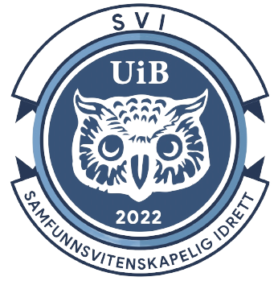

Samfunnsvitenskapelig idrett

SVI er en idrettsorganisasjon ved det samfunnsvitenskapelige fakultet som
arbeider for at studentene skal få drive med de idrettene de vil.
Det arrangeres blant annet turer og allidrett for hvem som helst som vil
delta. I tillegg jobbes det med å opprette lag av flest mulig forskjellige
typer idrett hvor man kan delta i uttak for å komme inn på de ulike
lagene.
Når disse uttakene holdes kan du holde deg oppdatert på SVI sin egen
Instagram eller Facebook.